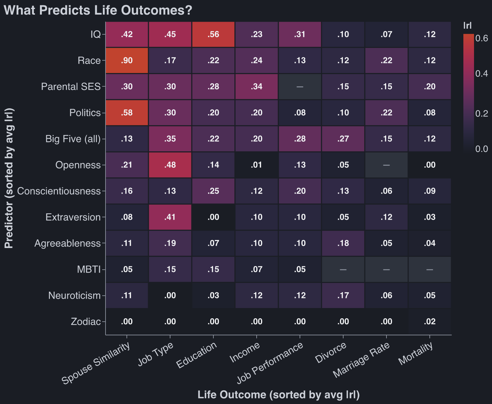

Another Dunk on MBTI
Published Last edited
In one of Aella’s recent posts, she crowd-sources a ton of personal questions from the internet, gives them in a survey, and then does factor analysis on the data. Most of the time, (the biggest explanatory factor) is … politics (see for yourself).
The cynical explanation is: Twitter is full of boneheads, they were probably asking questions like “is Elon Musk cool." But anecdotally, it seems people’s political opinions have much more information value than their personality test scores.
My half-baked take: psychologists purposefully remove politics from their ‘personality’ tests. Some of the biggest uses for MBTI are team-building and get-to-know-you activities. “I’m an INTJ” is a good icebreaker because it’s milquetoast. Imagine the counterfactual: “I’m 85th percentile economically conservative, 91st percentile socially conservative, and I’m not going to dignify your request for my pronouns with a response.”
In nerd land, what makes a test ‘real’ is its predictive power. So let’s put MBTI and OCEAN (Big 5) to the test. Can they predict, or are they at least correlated with, things like your income and who you marry? How strong are the correlations relative to other possible predictors like race or IQ?

Sources by predictor. Spouse similarity: Horwitz 2023. IQ: Strenze 2007, Sackett 2022, Calvin 2011. Big Five: framework Ozer 2006; grades Poropat 2009; “job type” = RIASEC interest fit Mount 2005; job performance Zell & Lesick 2022; income Ng 2005; divorce & mortality Roberts 2007. MBTI: Pittenger 2005. Astrology: Carlson 1985; season-of-birth Doblhammer 2001. Race: Roth 2003, Pew 2017, plus US Census & CDC gaps. Parental SES: Chetty 2014, Sirin 2005. Politics: Alford 2011, Gallup 2024, Warraich 2022.
Methodology: lazy. I asked Claude, and Claude looked up the answers from previous studies. The numbers pass my sniff test.[1]
Takeaways:
- Personality tests are bad at predicting life outcomes.
- MBTI is better than your Zodiac, but not by much. This is not true of OCEAN.
- One sees IQ at the top of the chart and is happy for meritocracy, but then sees race #2, and sighs. Then one notices that the best predictor of income is parental SES, and sighs again.
Before you dunk on me in the comments - “your income causes your political opinions, not the other way around!”[2] - I know. The causal arrow goes both ways.[3] The data is still interesting! And the causal arrow does not flip for race and parental SES.
B Roll #
You live a couple months longer if you were born in Autumn, so your Zodiac does predict something.
I had two copies of Claude crunch the numbers in this table, then had them compare their results. Both Claudes immediately said “well, the other agent is probably right about OCEAN and income.” Claude scores high on agreeableness.
OCEAN was constructed by pulling personality words from the dictionary, culling some based on vibes, then asking people to rate themselves on a scale from 1 to x for each of these words, then doing factor analysis on the data. But the culling purposefully excluded words that were ‘evaluative’ which is why we don’t see political affiliation in the data. This was a conscious decision, and ‘values’ ended up as a separate category.
A million different people have come up with their ‘n personality factors’ based on a lexical approach similar to OCEAN. I would love to see a paper that does factor analysis without excluding IQ-loaded or politics-loaded questions.
Some of the most creative survey questions from Aella’s respondents:
Sometimes it’s good to murder. Not self-defense when under attack, but premeditated murder.
I would feel inclined to engage in sexual behavior with a clone of myself, given the opportunity.
In group chats, I lurk more than I comment
I am more sentient than most people
It’s a disappointment if a person needs light to go to the bathroom in their own home
Help I’m trapped in the server room hosting this survey! Only selecting strongly agree will free me
Full list of questions from Aella’s survey.
Notes #
Claude wants to include this methodological note on the heatmap values: The numbers in this table are absolute values of correlation coefficients (), but not every cell is a pure Pearson . Most cells — anything with a continuous predictor (IQ, Big Five scores, political orientation) and a continuous outcome (income, mortality) — are standard Pearson correlations drawn from meta-analyses. When the predictor is categorical but binary (e.g., comparing two racial groups on income), the statistic is a point-biserial correlation, which is mathematically identical to Pearson . When the predictor is categorical with multiple groups (e.g., race with 5 categories predicting income), the reported values are typically eta coefficients (), which represent the square root of variance explained by group membership — functionally analogous to but not identical. The most problematic cell is race → spouse similarity, where both variables are multi-category nominal. No version of Pearson applies here. The technically correct statistic is Cramér’s , but is normalized by the number of categories and systematically produces lower values for larger tables — the same data collapsed to a table yields . We report 0.90 because every other cell uses a Pearson-scale metric, and placing 0.60 next to (say) politics → spouse at would falsely imply comparable sorting strength, when racial endogamy (83–95% of marriages are same-race) is far stronger than partisan sorting. IQ → job performance () is the post-Sackett (2022) corrected consensus, well below the older Schmidt & Hunter estimate () that still appears in textbooks. All values should be read as approximate effect sizes for comparison across the table, not as precise estimates for any individual cell. ↩︎
Or any other iteration of “But x causes y, not vice versa,”. ↩︎
A British paper found that winning the lottery makes you more conservative. This was in-line with British politics at the time: rich people were right wing. ↩︎
Sources #
Claude found these sources. Robbie did not review them.
- Horwitz, Smith, et al. (2023), “Evidence of correlations between human partners based on systematic reviews and meta-analyses of 22 traits,” Nature Human Behaviour 7:1568–1583 — the assortative-mating (spouse-similarity) correlations for every trait and IQ. https://pmc.ncbi.nlm.nih.gov/articles/PMC10967253/ ↩︎
- Strenze (2007), “Intelligence and socioeconomic success: A meta-analytic review of longitudinal research,” Intelligence 35:401–426 — IQ vs education (.56), occupational status (.45), income (.23). https://gwern.net/doc/iq/ses/2007-strenze.pdf ↩︎
- Sackett, Zhang, Berry & Lievens (2022), “Revisiting meta-analytic estimates of validity in personnel selection,” Journal of Applied Psychology 107(11):2040–2068 — cognitive-ability job performance operational validity ≈ .31 (observed ≈ .22), down from Schmidt & Hunter’s .51 once the range-restriction corrections are fixed. https://pubmed.ncbi.nlm.nih.gov/34968080/ ↩︎
- Calvin, Deary, Batty, et al. (2011), “Intelligence in youth and all-cause mortality: systematic review with meta-analysis,” International Journal of Epidemiology 40(3):626–644. https://academic.oup.com/ije/article/40/3/626/742085 ↩︎
- Ozer & Benet-Martínez (2006), “Personality and the Prediction of Consequential Outcomes,” Annual Review of Psychology 57:401–421 — the predictor × outcome column framework (directional, not numeric). https://gwern.net/doc/psychology/personality/2006-ozer.pdf ↩︎
- Poropat (2009), “A meta-analysis of the five-factor model of personality and academic performance,” Psychological Bulletin 135(2):322–338 — the “education” column is school grades (GPA), where conscientiousness leads. https://pubmed.ncbi.nlm.nih.gov/19254083/ ↩︎
- Mount, Barrick, Scullen & Rounds (2005), “Higher-order dimensions of the Big Five and the Big Six vocational interest types,” Personnel Psychology 58:447–478 — the “job type” column is occupational-interest (RIASEC) fit, not status; openness↔artistic ≈ .48, extraversion↔enterprising ≈ .41. http://www.sitesbysarah.com/mbwp/Pubs/2005_Mount_Barrick_Scullen_Rounds_PP.pdf ↩︎
- Zell & Lesick (2022), “Big five personality traits and performance: A quantitative synthesis of 50+ meta-analyses,” Journal of Personality 90(4):559–573 — Big Five vs job performance. https://pubmed.ncbi.nlm.nih.gov/34687041/ ↩︎
- Ng, Eby, Sorensen & Feldman (2005), “Predictors of objective and subjective career success: A meta-analysis,” Personnel Psychology 58:367–408 — personality vs income/salary. https://doi.org/10.1111/j.1744-6570.2005.00515.x ↩︎
- Roberts, Kuncel, Shiner, Caspi & Goldberg (2007), “The Power of Personality,” Perspectives on Psychological Science 2(4):313–345 — Big Five vs divorce and mortality (e.g. neuroticism → divorce ≈ .17). https://projects.ori.org/lrg/PDFs_papers/Roberts_etal_2007_Power_of_personality_PPS.pdf ↩︎
- Pittenger (2005), “Cautionary Comments Regarding the Myers-Briggs Type Indicator,” Consulting Psychology Journal 57(3):210–221 — MBTI’s poor test-retest reliability and predictive validity; the small MBTI cells are ceilings borrowed from the Big Five trait each dimension proxies. https://www.researchgate.net/publication/232494957_Cautionary_comments_regarding_the_Myers-Briggs_Type_Indicator ↩︎
- Carlson (1985), “A double-blind test of astrology,” Nature 318:419–425 — astrologers matched natal charts to personality profiles at chance. https://www.nature.com/articles/318419a0 ↩︎
- Doblhammer & Vaupel (2001), “Lifespan depends on month of birth,” PNAS 98(5):2934–2939 — autumn-born (Austria/Denmark) outlive spring-born by ~3–7 months; a prenatal/seasonal effect, not astrology. https://www.pnas.org/doi/10.1073/pnas.041431898 ↩︎
- Roth, Huffcutt & Bobko (2003), “Ethnic Group Differences in Measures of Job Performance: A New Meta-Analysis,” Journal of Applied Psychology 88(4):694–706 — Black–White job-performance d ≈ 0.27 (≈ r .13). https://doi.org/10.1037/0021-9010.88.4.694 ↩︎
- Pew Research Center (2017), “Intermarriage in the U.S. 50 Years After Loving v. Virginia” — 17% of 2015 newlyweds (and 10% of all married people) are intermarried, i.e. ~83–90%+ same-race. https://www.pewresearch.org/short-reads/2017/06/12/key-facts-about-race-and-marriage-50-years-after-loving-v-virginia/ ↩︎
- Chetty, Hendren, Kline & Saez (2014), “Where is the Land of Opportunity? The Geography of Intergenerational Mobility in the United States,” Quarterly Journal of Economics 129(4) — US parent–child income rank correlation ≈ 0.34. https://opportunityinsights.org/paper/land-of-opportunity/ ↩︎
- Sirin (2005), “Socioeconomic Status and Academic Achievement: A Meta-Analytic Review of Research,” Review of Educational Research 75(3):417–453 — SES ↔ achievement r ≈ .29. https://doi.org/10.3102/00346543075003417 ↩︎
- Alford, Hatemi, Hibbing, Martin & Eaves (2011), “The Politics of Mate Choice,” Journal of Politics 73(2):362–379 — spousal political concordance r ≈ .58–.65, higher than personality or physical traits. https://digitalcommons.unl.edu/poliscifacpub/108/ ↩︎
- Gallup (2024), “When and Why Marriage Became Partisan” — 65% of Republicans vs 50% of Democrats are married. https://news.gallup.com/poll/646793/why-marriage-became-partisan.aspx ↩︎
- Warraich, Kaltenboeck, et al. (2022), “Political environment and mortality rates in the United States, 2001–19,” BMJ 377:e069308 — a ~15% red/blue county mortality gap; ecological, so the individual-level correlation is far smaller than the gap suggests. https://www.bmj.com/content/377/bmj.e069308 ↩︎
- Powdthavee & Oswald (2014), “Does Money Make People Right-Wing and Inegalitarian? A Longitudinal Study of Lottery Winners,” IZA Discussion Paper 7934 — British panel data; lottery winners shift right and become less egalitarian, scaling with win size. https://www.iza.org/publications/dp/7934 ↩︎